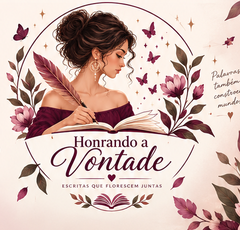

Escrita • leitura • encontro
Cada mulher carrega uma história. Aqui, ela encontra voz, forma e permanência.
Um espaço dedicado à valorização da escrita produzida por mulheres, reunindo autoras, leitoras e apreciadoras da literatura em torno da criação, da troca e do fortalecimento coletivo.

Encontros literáriostroca e presença
Oficinasdesenvolvimento da escrita
Sarausvoz e expressão
Rede de incentivorespeito e colaboração
Apresentação
Histórias que se encontram
O Honrando a Vontade valoriza a escrita produzida por mulheres e cria condições para compartilhar obras, desenvolver a produção literária e construir uma rede de incentivo baseada no respeito, na colaboração e no amor pelas palavras.
“Cada mulher carrega uma história; cada história merece ser escrita.”
Caminhos de participação
Da leitura à criação coletiva
Encontros literários, clubes de leitura, oficinas, saraus, lançamentos, antologias e projetos culturais formam a base das experiências do projeto.